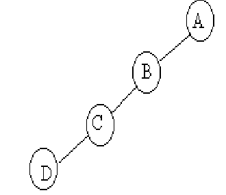

Binary Tree
Binary Tree merupakan salah satu bentuk struktur data tidak linear yang menggambarkanhubungan yang bersifat hirarkis (hubungan one to many) antara elemen-elemen. Tree bisa didefinisikan sebagai kumpulan simpul/node dengan satu elemen khusus yang disebut Root dan node lainnya ( disebut subtree).
Dalam tree terdapat jenis-jenis tree yang memiliki sifat khusus, diantaranya adalah binary tree.
Binary tree adalah suatu tree dengan syarat bahawa tiap node (simpul) hanya boleh memiliki maksimal dua subtree dan kedua subtree tersebut harus terpisah. Tiap node dalam binary treee boleh memiliki paling banyak dua child (anak simpul), secara khusus anaknya dinamakan kiri dan kanan.
Binary Tree merupakan himpunan vertex-vertex yang terdiri dari 2 subtree (dengan disjoint) yaitu subtree kiri dan subtree kanan. Setiap vertex dalam binary tree mempunyai derajat keluar max = 2.
Sebuah pohon biner adalah grafik asiklis yang terhubung dimana setiap tingkatan dari susut tidak lebih dari 3. Ini dapat ditunjukkan bahwa dalam pohon biner manapun, terdapat persis dua atau lebih simpul dengan tingkat satu daripada yang terdapat dengan tingkat tiga, tetapi bisa terdapat angka apa saja dari simpul dengan tingkat dua. Sebuah pohon biner berakar merupakan sebuah grafik yang mempunyai satu dari sudutnya dengan tingkat tidak lebih dari dua sebagai akar.
Dengan akar yang dipilih, setiap sudut akan memiliki ayah khusus, dan diatas dua anak bagaimanapun juga, sejauh ini terdapat keterbatasan informasi untuk membedakan antara anak kiri atau kanan. Jika kita membuang keperluan yang tak terkoneksi, membolehkan bermacam koneksi dalam komponen di grafik, kita memanggil struktur sebuah hutan.
- Sebuah jalan lain untuk mendefinisikan pohon biner melalui definisi rekursif pada grafik langsung. Sebuah pohon biner dapat berarti :
- Sebuah sudut tunggal.
- Sebuah graf yang dibentuk dengan mengambil dua pohon biner, menambahkan sebuah sudut, dan menambahkan sebuah panah langsung dari sudut yang baru ke akar dai setiap pohon biner.
Pohon biner dapat dikontruksi dari bahasa pemrogaraman primitif dalam berbagai cara. Dalam bahasa yang menggunakan records dan referensi. Pohon biner secara khas dikontruksi dengan mengambil sebuah struktur simpul pohon yang memuat beberapa data dan referensi ke anak kiri dan anak kanan.
Kadang-kadang itu juga memuat sebuah referensi ke ayahnya yang khas. Jika sebuah simpul mempunyai kurang dari dua anak, beberapa penunjuk anak diaatur kedalam nilai nol khusus atau kesebuah simpul sentinel.
Pohon biner dapat juga disimpan sebagai struktur data implisit dalam array, dan jika pohon tersebut merupakan sebuah pohon biner lengkap, metode ini tidak boros tempat. Dalam penyusunan yang rapat ini, jika sebuah simpul memiliki indeks i, anaknya dapat ditemukan pada indeks ke-2i+1 dan 2i+2, meskipun ayahnya (jika ada) ditemukan pada indeks lantai ((i-1)/2) (asumsikan akarnya memiliki indeks kosong). Metode ini menguntungkan dari banyak penyimpanan yang rapat dan memiliki referensi lokal yang lebih baik, teristimewa selama sebuah preordeer traversal.
-
Predessor. Node yang berada diatas node tertentu.
-
Successor. Node yang berada dibawah node tertentu.
-
Ancestor. Seluruh node yang terletak sebelum node tertentu dan terletak pada jalur yang sama.
-
Descendant. Seluruh node yang terletak sesudah node tertentu dan terletak pada jalur yang sama.
-
Parent. Predesesor satu level diatas satu node
-
Child. Succesor satu level dibawah satu node
-
Sibling. Node yang memiliki parent yang sama dengan satu node
-
SubTree Bagian dari tree yang berupa suatu node beserta descendant-nya
-
Size. Banyaknya node dalam suatu tree
-
Height. Banyaknya tingkat/level dalam suatu tree
-
Root, Node khusus dalam tree yang tidak memiliki predesesor
-
Leaf. Node-node dalam tree yang tidak memiliki daun
-
Degree. Banyaknya child yang dimiliki oleh suatu node
Istilah-istilah dalam pohon :
- Istilah pada Pohon Binner
- Pohon Biner Penuh (Full Binary Tree)
Semua simpul (kecuali daun) memiliki 2 anak dan tiap cabang memiliki panjang ruas yang sama.

- Pohon Biner Lengkap (Complete Binary Tree)
Hampir sama dengan Pohon BinerPenuh, semua simpul (kecualidaun) memiliki 2 anak tetapi tiap cabang memiliki panjang ruas berbeda.
- Pohon Biner Similer
Dua pohon yang memiliki struktur yang sama tetapi informasinya berbeda.
- Pohon Biner Ekivalent
Dua pohon yang memiliki struktur dan informasi yangsama.
- Pohon Biner Miring (Skewed Tree)
Dua pohon yang semua simpulnya mempunyai satu anak / turunan kecuali daun.

- Pohon Biner Penuh (Full Binary Tree)
- Sifat Utama Pohon berakar:
- Jika Pohon mempunyai Simpul sebanyak n, maka banyaknya ruas atau edge adalah (n-1).
- Mempunyai Simpul Khusus yang disebut Root, jika Simpul tersebut memiliki derajat keluar >= 0, dan derajat masuk = 0.
- Mempunyai Simpul yang disebut sebagai Daun / Leaf, jika Simpul tersebut berderajat keluar = 0, dan berderajat masuk = 1.
- Setiap Simpul mempunyai Tingkatan / Level yang dimulai dari Root yang Levelnya = 1 sampai dengan Level ke - n pada daun paling bawah. Simpul yang mempunyai Level sama disebut Bersaudara atau Brother atau Stribling.
- Pohon mempunyai Ketinggian atau Kedalaman atau Height, yang merupakan Level tertinggi
- Pohon mempunyai Weight atau Berat atau Bobot, yang banyaknya daun (leaf) pada Pohon.
- Banyaknya Simpul Maksimum sampai Level N adalah :
- Banyaknya Simpul untuk setiap Level I adalah :
kunjungan pada pohon biner
Kunjungan pohon biner terbagi menjadi 3 bentuk binary tree
- Kunjungan secara preorder ( Depth First Order), mempunyai urutan :
- Cetak isi simpul yang dikunjungi ( simpul akar ),
- Kunjungi cabang kiri,
- Kunjungi cabang kanan .
- Kunjungan secara inorder ( symetric order), mempunyai urutan :
- Kunjungi cabang kiri
- Cetak isi simpul yang dikunjungi (simpul akar)
- Kunjungi cabang kanan .

- Kunjungan secara postorder, mempunyai urutan :
- Kunjungi cabang kiri
- Kunjungi cabang kanan
- Cetak isi simpul yang dikunjungi ( simpul akar )